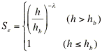
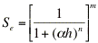
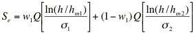
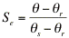

[ English | 日本語 ]
SWRC Fit
|
The soil hydraulic parameters for analyzing water movement in variably saturated soil can be determined by fittig soil hydraulic model to a soil water retention curve.
SWRC Fit performs nonlinear fitting of 5 soil hydraulic models to measured soil water retention curve; the relationship between the soil water potential and volumetric water content.
- It is written in numerical calculation language GNU Octave.
- Web interface is also available.
- Initial estimate of parameters is automatically determined by the program.
- Five models are (1) Brooks and Corey model, (2) van Genuchten model, (3) Kosugi model, (4) Durner model and (5) Seki model.
This software is primarily intended for scientists in the field of hydrology and geoscience to help their research. It has been extensively used and cited in over 50 scientific papers.
|
Soil water retention curve
|
Web interface
 SWRC Fit web interface is also available.
SWRC Fit web interface is also available.
Download
Version 2.0 was released on June 7, 2015. See version history.
Soil hydraulic models
3 unimodal (BC, VG, LN) and 2 bimodal (DB, BL) models.
| Model | Reference | Equation |
| BC | Brooks and Corey (1964) | 
|
| VG | van Genuchten (1980) |  (m=1-1/n)
|
| LN | Kosugi (1996) | 
|
| DB | Durner (1994) | 
(mi=1-1/ni) |
| BL | Seki (2007) |  |
where h is the suction head, θ is volumetric water content, Se is the effective water content defined by , i.e.,  ,
and Q(x) is the complementary cumulative normal distribution function, defined by Q(x)=1-Φ(x), in which Φ(x) is a normalized form of the cumulative normal distribution function. Please note that Q(x) is different from error function. Other parameters are soil hydraulic parameters to be estimated.
,
and Q(x) is the complementary cumulative normal distribution function, defined by Q(x)=1-Φ(x), in which Φ(x) is a normalized form of the cumulative normal distribution function. Please note that Q(x) is different from error function. Other parameters are soil hydraulic parameters to be estimated.
Reference
- Brooks, R.H., and A.T. Corey (1964): Hydraulic properties of porous media. Hydrol. Paper 3. Colorado State Univ., Fort Collins, CO, USA.
- Durner, W. (1994): Hydraulic conductivity estimation for soils with heterogeneous pore structure. Water Resour. Res., 30(2): 211-223.
- Kosugi, K. (1996): Lognormal distribution model for unsaturated soil hydraulic properties. Water Resour. Res. 32: 2697-2703.
- Seki, K. (2007) SWRC fit - a nonlinear fitting program with a water retention curve for soils having unimodal and bimodal pore structure. Hydrol. Earth Syst. Sci. Discuss., 4: 407-437. SRef-ID: 1812-2116/hessd/2007-4-407
- Thller, M. and D. Or (2003) Retetion of water in soil and the soil water characteristic curve. PDF textbook published online at the server of University of Connecticut. PDF
- van Genuchten, M. (1980): A closed-form equation for predicting the hydraulic conductivity of unsaturated soils. Soil Sci. Soc. Am. J. 44:892-898.
Citation of this work
Please cite this paper when you publish your work using SWRC Fit.
- Seki, K. (2007) SWRC fit - a nonlinear fitting program with a water retention curve for soils having unimodal and bimodal pore structure. Hydrol. Earth Syst. Sci. Discuss., 4: 407-437. doi:10.5194/hessd-4-407-2007
BibTeX and EndNote files are also available.
- Moret-Fernandez, D., J.L. Arrue, V. Perez and M.V. Lopez (2008): A TDR-pressure cell design for measuring the soil-water retention curve. Soil and Tillage Research, 100(1-2): 114-119. DOI: 10.1016/j.still.2008.05.009
- Saito, H., K. Seki, and J. Simunek (2009): An alternative deterministic method for the spatial interpolation of water retention parameters. Hydrology and Earth System Sciences, 13: 453-465. SRef-ID: 1607-7938/hess/2009-13-453
- Hamamoto, S., K. Seki, and T. Miyazaki (2009): Effect of aggregate structure on VOC gas adsorption onto volcanic ash soil. Journal of Hazardous Materials 166(1): 207-212. DOI: 10.1016/j.jhazmat.2008.11.008
- Hamamoto, S., P. Moldrup, K. Kawamoto, T. Komatsu, and D.E. Rolston (2009): Unified measurement system for the gas dispersion coefficient, air permeability, and gas diffusion coefficient in variably saturated soil. Soil Science Society of America Journal 73: 1921-1930. DOI: 10.2136/sssaj2009.0012
- Soe, A.K.K., M. Osada, and T.T. Nwe Win (2009): Evaluating the deformation behaviour of Shirahama sandstone in moisture transfer process. International Journal of the JCRM, 5(2): 69-76. PDF
- Toriyama, J., S. Ohta, M. Araki, K. Kosugi, T. Nobuhiro, N. Kabeya, A. Shimizu, K. Tamai, M. Kanzaki and S. Chann (2010): Soil pore characteristics of evergreen and deciduous forests of the tropical monsoon region in Cambodia. Hydrological Processes, 25(5): 714-726. DOI: 10.1002/hyp.7859
- Menghistu, M.T. (2010): Development of a numerical model for unsaturated/saturated hydraulics in ash/brine systems. Ph.D. Thesis, University of the Free State Bloemfontein. PDF
- Hamamoto, S., P. Moldrup, K. Kawamoto, P.N. Wickramarachchi, M. Nagamori and T. Komatsu (2011): Extreme compaction effects on gas transport parameters and estimated climate gas exchange for a landfill final cover soil. Journal of Geotechnical & Geoenvironmental Engineering 137(7): 653. DOI: 10.1061/(ASCE)GT.1943-5606.0000459
- Moret-Fernandez, D., Y. Pueyo, C.G. Bueno and C.L. Alados (2011): Hydro-physical responses of gypseous and non-gypseous soils to livestock grazing in a semi-arid region of NE Spain. Agricultural Water Management 98(12): 1822-1827. DOI: 10.1016/j.agwat.2011.07.001
and more. Thank you.
Question
Here you can find a list of questions and answers about SWRC Fit. You can submit your own question by getting the accout of GitHub (use the green "Sign up" button) and pressing the green "New Issue" button. Please select the label of "question". It is preferable to send your question publicly this way, because other people having the same question can find answer on the web. However, if your question is confidential, please contact me by email. Tou can find my email address in this paper.